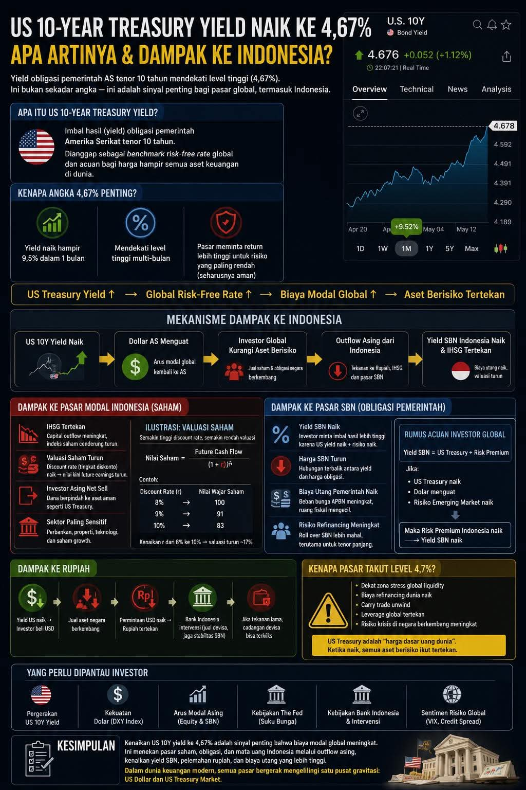

Gaya Gravitasi 4,67 Persen
Aroma kopi Arabika dari lereng Gunung Manglayang menguar kuat di antara sela-sela meja kayu besar di salah satu kedai kopi bilangan Jalan Dago Timur, Bandung. Udara malam itu berembun tipis, khas wilayah Bandung utara ketika memasuki pertengahan tahun. Di sudut ruangan, empat orang duduk melingkari sebuah laptop yang layarnya menyala terang, menampilkan grafik pergerakan pasar keuangan global yang berwarna merah membara.
Mereka adalah Rian, Aris, Danu, dan satu-satunya wanita di kelompok itu, Maya. Keempatnya adalah potret nyata dari kalangan terdidik Kota Kembang: lulusan Teknik Industri Institut Teknologi Bandung (ITB) angkatan 2018. Setelah lulus, masing-masing sempat berpencar menempa karier di Jakarta—mulai dari investment banking, manajemen risiko logistik, hingga analisis rantai pasok global. Namun, malam ini, sebuah organisasi sistem optimasi portfolio dan anomali makroekonomi membawa mereka kembali berkumpul di Bandung untuk membedah sebuah guncangan finansial besar.
"Lihat angka ini," kata Maya, jemarinya yang lentik mengetuk pelan layar sentuh laptopnya. Layar itu menampilkan grafik obligasi pemerintah Amerika Serikat tenor 10 tahun—US 10-Year Treasury Yield. Angkanya tertera tebal dan kaku: 4,67 persen. "Ini bukan sekadar angka acak di terminal Bloomberg atau TradingView. Ini adalah episentrum gempa. Skala Richter bagi seluruh likuiditas dunia."
Rian, yang menjabat sebagai kepala analis risiko di sebuah perusahaan modal ventura lokal, menyandarkan punggungnya ke kursi. Wajahnya tampak kusut setelah menempuh perjalanan menggunakan kereta cepat dari Jakarta sore tadi. "Yield obligasi AS naik hampir 9,5 persen hanya dalam waktu satu bulan. Mendekati level tertinggi multi-bulan. Bagi orang awam, kenaikan dari empat persen kecil ke 4,67 persen terdengar sepele. Tapi bagi kita yang biasa menghitung biaya modal, ini adalah bencana makro."

Aris, pria berkacamata yang memiliki spesialisasi dalam sistem pemodelan finansial dan kini mengelola dana kelolaan keluarga (family office), mengangguk setuju. Ia memutar-mutar cangkir kopinya yang tinggal setengah. "Benar, May. Sederhananya, instrumen yang dianggap sebagai benchmark risk-free rate global ini sekarang menawarkan imbal hasil yang terlalu seksi. Bayangkan, instrumen paling aman di bumi—karena dijamin penuh oleh pemerintah AS—berani membayar bunga mendekati 4,7 persen. Pasar global langsung menuntut return yang jauh lebih tinggi untuk aset lain yang memiliki risiko. Jika yang tanpa risiko saja memberi 4,67 persen, kenapa investor harus repot-repot menaruh uang di negara berkembang?"
Danu, yang sejak tadi sibuk mencoret-coret kertas sketsa dengan formula optimasi industri, mengangkat kepalanya. Di antara mereka berempat, Danu adalah sosok yang paling praktis. Ia menjalankan perusahaan rintisan manufaktur komponen otomotif presisi di kawasan industri Cimahi. "Gaya penarikan modal ini mirip dengan hukum gravitasi universal Newton yang biasa kita pelajari di kuliah Fisika Dasar di Tahap Persiapan Bersama dulu. Massa yang sangat besar di pusat akan menarik benda-benda kecil di sekitarnya. US Treasury dengan yield 4,67 persen adalah lubang hitam baru. Dia menyedot arus modal global kembali ke Washington, membuat biaya modal global melesat naik, dan akibatnya, aset berisiko di seluruh dunia langsung tertekan."
Hukum Dasar Finansial Global dan Transmisinya ke Indonesia
Maya membuka sebuah berkas infografis di tabletnya—sebuah bagan alur yang menjelaskan mekanisme transmisi guncangan ekonomi tersebut ke Indonesia. Ia menggeser tabletnya ke tengah meja agar bisa dilihat bersama. "Mari kita bedah secara runut menggunakan kerangka berpikir teknik industri. Kita punya input guncangan: US 10Y Yield Naik. Output akhirnya adalah penurunan valuasi pasar modal kita. Proses transmisinya tidak instan, melainkan melalui beberapa sub-sistem yang saling mengunci."
Maya menunjuk kotak pertama pada diagram alurnya. "Ketika yield di AS merangkak naik, dolar AS otomatis menguat secara masif. Mengapa? Karena investor global berebut membeli dolar untuk didepositokan atau diinvestasikan pada obligasi pemerintah AS tersebut. Indeks Dolar atau DXY melonjak. Langkah berikutnya, investor global mulai mengurangi kepemilikan aset berisiko mereka. Mereka melakukan sell-off saham dan obligasi di negara berkembang (emerging markets), termasuk Indonesia."
"Kenaikan yield obligasi AS ke 4,67 persen adalah sinyal penting bahwa biaya modal global meningkat. Ini menekan pasar saham, obligasi, dan mata uang Indonesia melalui outflow asing, kenaikan yield SBN, pelemahan rupiah, dan biaya utang yang lebih tinggi."
Aris melanjutkan penjelasan Maya dengan nada suara yang lebih berat. "Dan dari situlah petaka capital outflow dimulai. Ketika asing mencatatkan net sell besar-besaran, mereka menukarkan rupiah hasil jualan saham atau obligasi tersebut kembali menjadi dolar untuk dibawa pulang. Dampaknya seketika: tekanan luar biasa pada nilai tukar rupiah, IHSG kita rontok, dan pasar SBN kita ikut terpuruk karena harga obligasi domestik berbanding terbalik dengan yield-nya."
"Efeknya ke SBN kita sangat matematis," seru Rian sembari menarik kertas coretan Danu. Ia menuliskan sebuah persamaan referensi investor global yang sangat mendasar:
"Jika komponen pertama, yaitu US Treasury naik, ditambah lagi dolar menguat yang memicu risiko pasar negara berkembang ikut naik, maka Risk Premium Indonesia otomatis terkerek ke atas. Hasil akhirnya? Yield Surat Berharga Negara (SBN) kita dipaksa naik oleh pasar agar tetap terlihat menarik. Dan ingat hukum dasar obligasi: ketika yield naik, harga obligasi pasti turun," papar Rian secara runtut.
Dampak Riil pada Pasar Modal dan Sektor Riil
Danu menghela napas panjang mendengar penjelasan Rian. Bagi seorang pelaku sektor riil seperti dirinya, angka-angka makro tersebut bukan sekadar angka di atas kertas, melainkan ancaman nyata bagi kelangsungan arus kas pabriknya. "Kalian tahu apa artinya kalau yield SBN kita naik? Biaya utang pemerintah untuk membiayai APBN membengkak. Beban bunga meningkat, yang berarti ruang fiskal pemerintah untuk memberikan subsidi atau membangun infrastruktur akan mengecil. Tidak hanya itu, risiko refinancing juga meningkat karena saat jatuh tempo, pemerintah harus menerbitkan obligasi baru dengan suku bunga yang jauh lebih mahal."
"Bagaimana dengan dampak langsung ke perusahaanmu di Cimahi, Dan?" tanya Maya menatap Danu dengan cermat. Sebagai sesama lulusan Teknik Industri, ia tahu betul bahwa struktur biaya modal (Cost of Capital) sangat menentukan hidup matinya proyek rekayasa manufaktur.
"Sangat terasa, May. Kami sedang berencana mengekspansi lini produksi mesin cetak otomatis pihak ketiga. Kami butuh pinjaman bank. Tapi dengan situasi yield SBN yang tinggi, perbankan domestik juga ikut menaikkan suku bunga kredit mereka untuk menjaga margin. Biaya modal kami membumbung tinggi," jawab Danu lesu. Ia kemudian mengambil pulpen dan menggambarkan formula valuasi saham konvensional yang biasa digunakan para analis finansial:
"Mari kita simulasikan secara matematika industri," lanjut Danu. "Katakanlah pembilang kita, yaitu Future Cash Flow sebuah perusahaan tetap stabil. Namun, karena yield obligasi naik, Discount Rate atau tingkat diskonto ($r$) yang kita gunakan sebagai penyebut terkapak kita naikkan. Jika $r$ naik dari 8 persen ke 10 persen, secara otomatis nilai sekarang (Present Value) dari seluruh arus kas masa depan perusahaan tersebut akan menyusut drastis. Simulasi kasarnya, kenaikan tingkat diskonto sebesar itu bisa memangkas nilai wajar saham hingga sekitar 17 persen! Inilah alasan mengapa IHSG tertekan hebat akhir-akhir ini."
Aris menimpali, "Dan sektor yang paling sensitif terhadap kenaikan tingkat diskonto ini adalah perbankan, properti, teknologi, dan saham-saham dengan pertumbuhan tinggi (growth stocks). Sektor teknologi, misalnya, sangat bergantung pada pendanaan jangka panjang dengan ekspektasi pertumbuhan masa depan. Ketika biaya modal naik, valuasi mereka langsung dihancurkan tanpa ampun oleh pasar."
Ancaman Terhadap Mata Uang Rupiah
Diskusi malam itu semakin memanas saat jam dinding kedai kopi menunjukkan pukul sepuluh malam. Kabut tipis mulai turun di sepanjang jalan Dago. Maya memesan segelas teh jahe hangat untuk meredakan dingin yang mulai merayap.
"Kita belum membahas hal yang paling krusial bagi stabilitas nasional: rupiah," ujar Maya setelah menyesap tehnya. "Mekanisme transmisi ke rupiah bergulir cepat sekali. Begitu yield US naik dan investor asing melakukan aksi jual aset di pasar berkembang, permintaan akan dolar AS melonjak. Di sisi lain, pasokan dolar di pasar domestik menyusut karena modal keluar."
Rian mengangguk. "Betul. Dan di sini lah peran Bank Indonesia menjadi sangat krusial sekaligus berat. BI harus melakukan intervensi di pasar valuta asing secara langsung untuk menjaga stabilitas nilai tukar agar rupiah tidak terjun bebas. Mereka harus menjual pasokan dolar mereka dan membeli rupiah di pasar. Masalahnya, jika tekanan global ini berlangsung dalam jangka waktu yang lama, cadangan devisa kita akan terkikis secara signifikan."
"Itulah alasan utama mengapa pasar sangat ketakutan ketika angka yield menyentuh atau melewati level 4,7 persen," tambah Aris. "Level itu adalah zona stres bagi likuiditas global. Kenaikan di atas level itu bisa memicu fenomena carry trade unwind, di mana investor yang sebelumnya meminjam dana dalam mata uang dengan bunga rendah untuk diinvestasikan di negara berkembang terpaksa menutup posisi mereka secara tergesa-gesa karena risiko yang tak lagi sebanding. Efek dominonya adalah pelepasan leverage secara masif yang bisa memicu krisis likuiditas global baru."
Sinergi Analisis dan Langkah ke Depan
Keempat sekawan itu terdiam sejenak, merenungkan kompleksitas ekosistem finansial modern yang saling terhubung satu sama lain. Sebagai insinyur teknik industri, mereka dididik untuk melihat dunia sebagai satu kesatuan sistem terintegrasi—mulai dari lantai pabrik yang kotor hingga lantai bursa yang berkilauan di New York maupun Jakarta.
"Kesimpulannya jelas," kata Danu sembari menutup buku catatannya. "Dalam dunia keuangan modern, semua pasar bergerak mengelilingi satu pusat gravitasi tunggal, yaitu US Dollar dan US Treasury Market. Ketika pusat gravitasi itu bergeser atau membesar energinya seperti sekarang, seluruh planet kecil di sekitarnya harus menyesuaikan orbitnya jika tidak ingin hancur bertabrakan."
Maya tersenyum tipis, melihat bagaimana persahabatan mereka yang dimulai dari ruang kuliah sempit di Jalan Ganesha kini telah bertransformasi menjadi ruang diskusi strategis yang tajam. "Sebagai investor dan pelaku industri, apa saja variabel utama yang harus kita pantau ketat dalam beberapa minggu ke depan?"
Rian merinci daftarnya menggunakan jemarinya:
- Pergerakan US 10Y Yield: Apakah akan menembus batas psikologis 4,7 persen secara permanen atau justru berbalik arah karena data ekonomi AS melemah.
- Kekuatan Dolar (DXY Index): Untuk mengukur seberapa besar tekanan pelemahan mekanis terhadap mata uang rupiah.
- Arus Modal Asing (Equity & SBN): Memantau volume net buy atau net sell investor asing di Bursa Efek Indonesia untuk mendeteksi pembalikan arah modal.
- Kebijakan The Fed & Bank Indonesia: Suku bunga acuan serta intensitas intervensi cadangan devisa oleh BI.
- Sentimen Risiko Global: Melalui indikator VIX (Volatility Index) dan Credit Spread untuk melihat tingkat kepanikan investor global.
Malam semakin larut ketika mereka akhirnya memutuskan untuk mengakhiri diskusi. Di luar, jalanan Bandung utara tampak lengang dan basah oleh sisa gerimis. Meskipun tantangan ekonomi makro di depan mata terasa begitu berat dan penuh ketidakpastian, ada rasa optimisme yang tertanam di dada mereka masing-masing. Diperkaya oleh pemahaman sains, ketajaman analisis sistem, dan persahabatan yang solid, keempat alumni Teknik Industri tersebut siap menghadapi dinamika badai finansial global—mengubah risiko makro menjadi peluang strategis yang terukur.